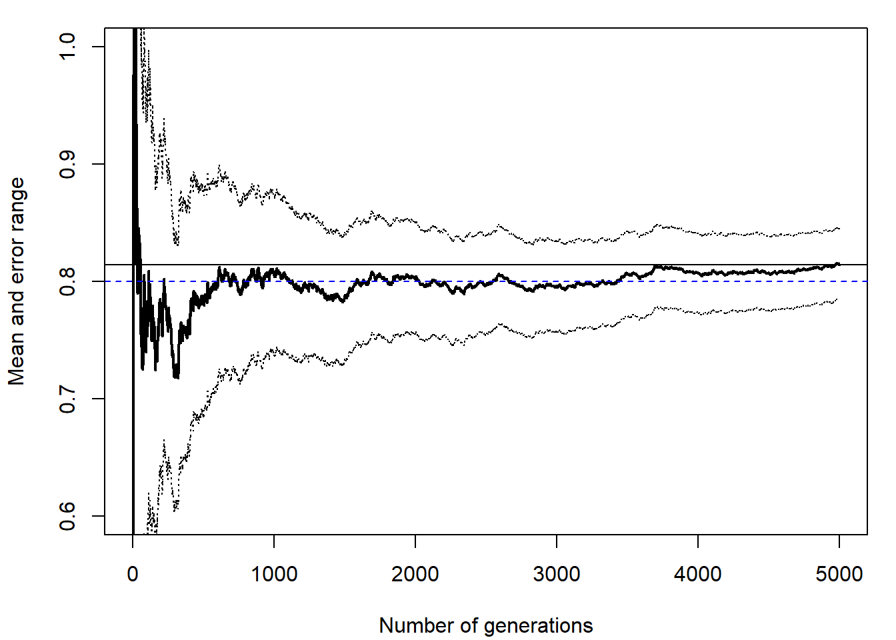
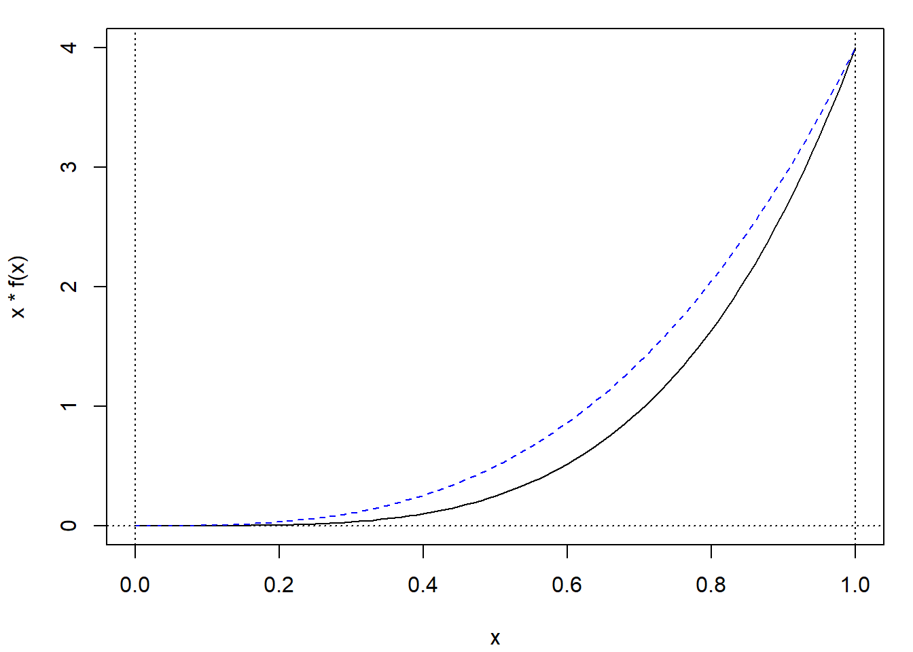
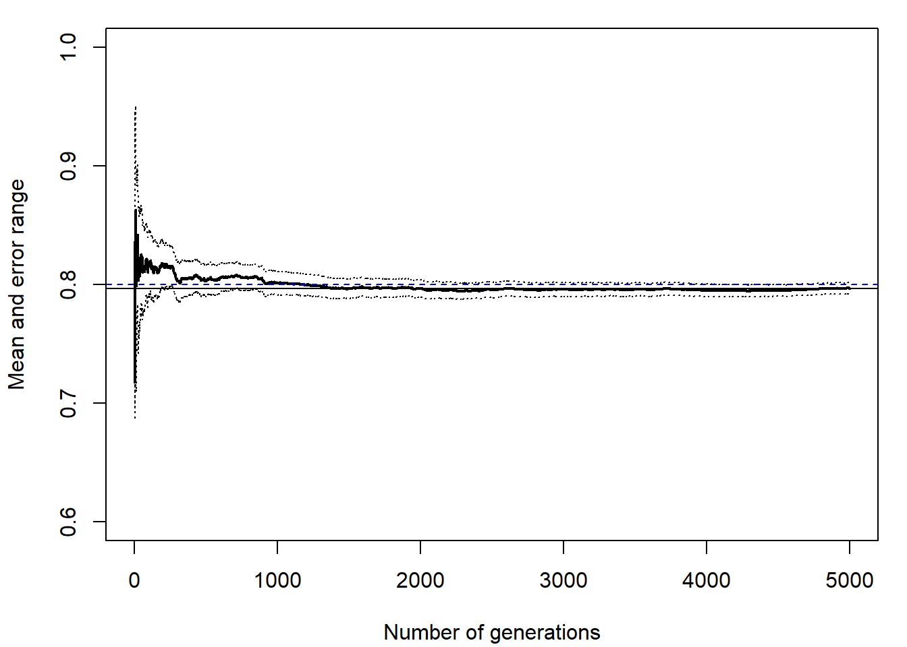

7.1 Integración Monte Carlo
La integración Monte Carlo se emplea principalmente para aproximar integrales multidimensionales: \[I = \int \cdots \int _D s\left( x_1,\ldots ,x_n\right) dx_1 \cdots dx_n\] donde puede presentar ventajas respecto a los métodos tradicionales de integración numérica (ver Apéndice B), ya que la velocidad de convergencia no depende del número de dimensiones.
La idea es reescibir la expresión de la integral, encontrando una función de densidad \(f\) definida sobre \(D\), de forma que: \[I = \int _D s(\mathbf{x}) d \mathbf{x} = \int h(\mathbf{x})f(\mathbf{x}) d \mathbf{x} = E\left( h(\mathbf{X}) \right)\] donde \(\mathbf{X} \sim f\) (y preferiblemente fácil de simular).
7.1.1 Integración Monte Carlo clásica
En el caso de que el dominio \(D\) sea acotado, la aproximación más simple consiste en considerar una distribución uniforme en \(D\) (i.e. \(f(\mathbf{x})=1_D(\mathbf{x})/|D|\) y \(h(\mathbf{x}) = |D|s(\mathbf{x})\)).
Por simplicidad nos centraremos en el caso unidimensional (el orden de convergencia es independiente del número de dimensiones). Supongamos que nos interesa aproximar: \[I = \int_0^1 s(x) dx\] Por tanto, si \(x_1,x_2,\ldots ,x_n\) i.i.d. \(\mathcal{U}(0, 1)\), entonces: \[I = E\left( s\left( \mathcal{U}(0, 1) \right) \right) \approx \frac{1}{n}\sum\limits_{i=1}^n s\left( x_i\right)\]
Si el intervalo de integración es genérico: \[I = \int_a^b s(x) dx = (b-a)\int_a^b s(x) \frac1{(b-a)}dx = (b-a)E\left( s\left( \mathcal{U}(a, b) \right) \right).\] Si \(x_1,x_2,\ldots ,x_n\) i.i.d. \(\mathcal{U}(a, b)\): \[I \approx \frac{b-a}{n}\sum\limits_{i=1}^n s\left( x_i\right)\]
Ejemplo 7.1 (integración Monte Carlo clásica)
Como primera aproximación para implementar la integración Monte Carlo clásica para aproximar integrales del tipo: \[I = \int_a^b s(x) dx,\] podríamos considerar la siguiente función:
# ··········································································
# Integración Monte Carlo de `fun()` entre `a` y `b` utilizando una muestra
# (pseudo) aleatoria de tamaño `n`. Se asume que `fun()` es una función de
# una sola variable (no vectorial), `a < b` y `n` entero positivo.
# ··········································································
mc.integral0 <- function(fun, a, b, n) {
x <- runif(n, a, b)
fx <- sapply(x, fun) # Si fun fuese vectorial bastaría con: fx <- fun(x)
return(mean(fx) * (b - a))
}Como ejemplo, empleamos esta función para aproximar: \[\int_0^1 4x^4 dx = \frac{4}{5}\] (este es el mismo ejemplo utilizado en la Sección B.1 del Apéndice B, en la que se emplean métodos numéricos34; ver Figura B.1 o 7.2).
fun <- function(x) ifelse((x > 0) & (x < 1), 4 * x^4, 0)
set.seed(1)
mc.integral0(fun, 0, 1, 20)## [1] 0.97766mc.integral0(fun, 0, 1, 500)## [1] 0.77558Con la integración Monte Carlo clásica estamos aproximando integrales a partir de la media muestral de generaciones de una transformación de una uniforme, \((b-a) s\left( \mathcal{U}(a, b) \right)\).
Por tanto, se aplicarían todos los resultados y observaciones de las Secciones 3.1 y 3.2.
Sin embargo, la función mc.integral0() no es adecuada para analizar la convergencia de la aproximación por simulación.
Una alternativa más eficiente para representar gráficamente la convergencia está implementada en la función mc.integral() del paquete simres (fichero mc.plot.R):
library(simres)
mc.integral## function(fun, a, b, n, level = 0.95, plot = TRUE, ...) {
## fx <- sapply(runif(n, a, b), fun) * (b - a)
## result <- if (plot) conv.plot(fx, level = level, ...) else {
## q <- qnorm((1 + level)/2)
## list(approx = mean(fx), max.error = q * sd(fx)/sqrt(n))
## }
## return(result)
## }
## <bytecode: 0x00000271cf42d410>
## <environment: namespace:simres>set.seed(1)
mc.integral(fun, 0, 1, 5000, ylim = c(0.6, 1))## $approx
## [1] 0.81422
##
## $max.error
## [1] 0.030282abline(h = 4/5, lty = 2, col = "blue")
Figura 7.1: Gráfico de convergencia de la aproximación mediante integración Monte Carlo clásica (con distribución uniforme).
Esta función devuelve además la aproximación por simulación y el error máximo (por defecto al 95%).
Si sólo nos interesaran estos valores podemos establecer el argumento plot = FALSE.
Es importante tener en cuenta que la función mc.integral() solo es válida para dominio finito.
7.1.2 Caso general
En lo que resta de esta sección (y en las siguientes) asumiremos que nos interesa aproximar una esperanza: \[\theta = E\left( h\left( X\right) \right) = \int h\left( x\right) f(x)dx\] siendo \(X\sim f\) (con distribución no necesariamente uniforme, ni dominio acotado). Entonces, si \(x_1,x_2,\ldots ,x_n\) i.i.d. \(X\), la aproximación por simulación será: \[\hat\theta = \frac{1}{n}\sum\limits_{i=1}^nh\left( x_i\right)\]
Por ejemplo, como el integrando del Ejemplo 7.1 anterior se corresponde con el caso general de \(h(x) = x\) y \(f(x) = 4x^3\) para \(0 \le x \le1\), se generarían observaciones de esta distribución en lugar de emplear la uniforme. De esta forma se incrementarán las evaluaciones del integrando en la zona de mayor área y aumentará la precisión de la aproximación por simulación (ver Figura 7.2).
f <- function(x) ifelse((x >= 0) & (x <= 1), 4 * x^3, 0)
curve(x*f(x), 0, 1) # curve(fun, 0, 1)
curve(f, 0, 1, lty = 2, col = "blue", add = TRUE)
abline(h = 0, lty = 3)
abline(v = c(0, 1), lty = 3)
Figura 7.2: Representación del integrando de ejemplo (con dominio acotado) y de la densidad utilizada en su aproximación.
En la práctica, los pasos serían simular x con densidad \(f\) y aproximar la integral por mean(h(x)).
En este caso podemos generar valores de la densidad objetivo fácilmente mediante el método de inversión, ya que \(F(x) = x^4\), si \(0 \le x \le 1\), y la función cuantil es \(F^{-1}(p) = \sqrt[4]{p}\), para \(0 \le p \le 1\).
rx <- function(nsim) runif(nsim)^(1/4) # Método de inversión
nsim <- 5000
set.seed(1)
x <- rx(nsim)
# h <- function(x) x
# mean(h(x)) # Aproximación por simulación
mean(x)## [1] 0.79678# Error máximo al 95%
# error <- 1.96*sd(h(x))/sqrt(nsim)
# Gráfico de convergencia
# plot(cumsum(h(x)/1:nsim, type = "l", lwd = 2,
# xlab = "Número de generaciones", ylab = "Media muestral")Además de obtener la aproximación por simulación y el error máximo, por defecto al 95%, podemos generar el gráfico de convergencia con conv.plot(h(x)) (ver Figura 7.3):
res <- conv.plot(x, ylim = c(0.6, 1))
abline(h = 4/5, lty = 2, col = "blue")
Figura 7.3: Gráfico de convergencia de la aproximación mediante integración Monte Carlo.
res## $approx
## [1] 0.79678
##
## $max.error
## [1] 0.0046335Como se puede comprobar, al comparar los resultados con los obtenidos mediante integración Monte Carlo clásica (Figura 7.1), la mejora en la precisión es notable (el error máximo es un 15% del anterior).
Esta forma de proceder permite aproximar integrales impropias en las que el dominio de integración no es acotado.
Ejemplo 7.2 (integración Monte Carlo con dominio no acotado)
Supongamos que el objetivo es aproximar: \[\phi(t)=\int_{t}^{\infty}\frac1{\sqrt{2\pi}}e^{-\frac{x^2}2}dx,\] para \(t=4.5\), mediante integración Monte Carlo (aproximación tradicional con dominio infinito). Es decir, como se trata de aproximar \(P(X>4.5) = 3.39767\times 10^{-6}\) (en la práctica sería desconocida) con \(X \sim \mathcal{N}( 0, 1 )\), emplearíamos como aproximación la media muestra de generaciones de \(h(X)\) siendo \(h(x) = 1_{\{x \ge 4.5\}}(x)\):
# h <- function(x) x > 4.5
# f <- function(x) dnorm(x)
# pnorm(-4.5) # valor teórico P(X > 4.5)
set.seed(1)
nsim <- 10^3
x <- rnorm(nsim)
mean(x > 4.5) # mean(h(x))## [1] 0Sin embargo, cuando la integral está relacionada con las colas de las distribución (lo que sería de esperar cuando el número de dimensiones es grande), puede ser difícil que con este procedimiento se generen valores en la región de interés para la aproximación de la integral:
sum(x > 4.5)## [1] 0En este caso se empleó todo el tiempo de computación en evaluar el integrando en puntos donde es nulo, y ya no tendría sentido analizar la convergencia (sería constante), ni aproximar el error (su estimación sería cero).
Como ya se comentó anteriormente, sería preferible generar más valores donde hay mayor “área”, pero en este caso \(f\) concentra la densidad en una región que no resulta de utilidad. Por ese motivo puede ser preferible recurrir a una densidad auxiliar que solvente este problema.
Como se comentó en la introducción, si el número de dimensiones es pequeño pueden ser más eficientes métodos numéricos. Podríamos considerar que la velocidad de convergencia de la aproximación por simulación es lenta pero no depende del número de dimensiones.↩︎